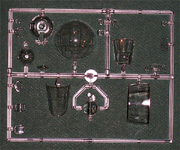
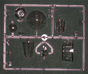

{kind=link}
{kind=link}

{kind=link}
You may click on these small images to view larger pictures

MPM 1/48 Heinkel He.177A-5 Greif
Kit #48058
MSRP $95.00
Images and text Copyright � 2006 by Matt Swan
Developmental Background
She was named �Greif� which translates as �Griffin� by the engineers that created her. Born out of a 1938 Luftwaffe requirement for a heavy bomber/anti-shipping aircraft that was also capable of dive bombing the He.177 was an impressive aircraft and when everything worked correctly she was a marvel to behold. Unfortunately things did not often work correctly. Designed by Heinkel and produced by both Heinkel and Arado Handelsgesellschaft the aircraft gave the appearance of a twin engined bomber but was in truth a four engine behemoth.
Besides reoccurring problems with fuselage rigidity and control surface flutter the fact that two Daimler Benz engines were packed into the nacelle linked to a single four blade propeller with inadequate cooling resulted in persistent engine fire issues. This was such a persistent issue that flight crews nicknamed the aircraft Luftwaffenfeuerzeug (Luftwaffe lighter). Arado manufactured about 130 A-1s and Heinkel turned out about 170 A-3s and 826 A-5s. Many of the A-3s were fitted with a 50mm or 75mm cannon and used for tank busting on the Eastern front. Overall nearly 700 He.177s of one version or another served on the Eastern front. He.177s also held the distinction of performing some of the last attacks on Great Britain near the end of the war. A single He.177 was stationed in Czechoslovakia and was being readied to carry the German atomic bomb; a few brave Norwegian saboteurs put an end to that plan.
The Greif was manned by a crew of six, carried an impressive defensive armament consisting of three to four MG131s, two MG81s and a MG151 in the tail as a stinger. She could carry two Hs293 guided missiles or FX 1400 guided bombs externally or a variety of bombs and depth charges. This was the only German bomber that could actually carry a full load of Hs293s or FX 1400s. The internal bomb bay could accommodate 13,200 pounds of ordinance. She could obtain a top speed of 295 mph at a gross weight of 41,000 pounds and had over 3000 miles of range � when everything worked correctly and she didn�t set herself on fire. Overall more than 1000 units were produced however none of those survived to this day.
The Kit
I have been waiting for a 1/48 scale model of this aircraft for more years than I can remember and when MPM announced the development of this kit my anticipation levels became nearly unbearable. At last it is here and with great excitement I opened the box that FedEx dropped on my front door step. The kit comes in a goodly sized box that is packed with parts. First thing I see here are the decal sheets and resin details stapled to a light gauge piece of cardboard spanning the width of the box. Below this are three poly bags full of sprues and the fuselage pieces with no bag of their own. The only issue I have with the packaging is that the clear parts are packed with a bunch of gray parts and several had broken from the sprue in transit. I would have much preferred to see the clear parts in their own bag. Fortunately none of these pieces seemed to take any damage.
The gray high pressure injection molded pieces are all well done with smooth exterior finish, crisp and consistent engraved panel lines, no visible flash, no sink holes were evident and while there are some large injector pin markings on interior surfaces none of them are located in areas the will require clean-up or interfere with the assembly of the kit. The kit does include some parts not for use with the A-5 version which implies we could be seeing other variants coming out in the near future � this would only make sense as the manufacture will want to get the most mileage possible from the basic tooling. Overall we have twelve sprues of light gray plastic pieces totaling three hundred twenty six pieces. Then we have the clear parts, these all show very good clarity even before being treated with Future, display well defined frame lines and no flash. Here we have nineteen pieces. Add to that the five resin pieces which cover the exhaust manifolds and two MG151 machine guns and the total parts count for this kit raises to a whopping three hundred and fifty pieces.
You may click on these small images to view larger pictures

With three hundred and fifty pieces I think it�s safe to say that this kit provides lots of detail. Looking at the front office there are four separate steps to assembly there with sixty six pieces involved. The stinger (tail gun station) also provides plenty of interesting detail with complete seat and cannon features. It does look like MPM did a very nice job on the landing gear not only getting the look correct but also making them sturdy enough to support the weight of the finished model. Now for the bad news, we do not get a detailed bomb bay and while the box art shows three exterior bomb mounting racks none are included with the kit. We also get no munitions load.
Decals and Instructions
MPM did a nice job with the instructions creating a small booklet of eighteen pages that begins with a well done historical background of the type in English and Czech followed by a complete parts map. The next fifteen pages consist of thirty two exploded view assembly steps that look to be very well done and include plenty of color call-outs. The last page of this booklet covers service markings and warning stencil placement. In addition to this booklet we also get a large full color page, printed on both sides, showing exterior color schemes for two aircraft and including decal placement for the individual examples.
The kit includes two sheets of decals, (you may click on the small image at the right to view a larger picture) one large sheet with the individual aircraft markings and a secondary sheet with all the service and warning stencils. The decals really look good with excellent print registry and color density. Carrier film appears to be minimal and the print looks properly thin.
You may click on the images above to view larger images
Conclusion
This kit is for an A-5 variant of the He.177, it does look like other version will be coming down the pike but for now should you want to build an earlier version like the A-0 or the A-1 the kit does include the correct tail and ailerons but the vertical fin will need some serious work. Major surgery would be required to convert this to any of the V prototype aircraft as the nose and tail are very different. The profile line of the model is not quite accurate for the A-5 version but I have yet to find a model that is perfect in every way. As this model has just hit the market, my review sample only arriving today, there are no aftermarket items available yet but I am certain we will be seeing them soon. I would suggest to the industry that they get us a good bomb bay package for this and some bomb racks with some different options in load-out. No matter how you cut it this is a very nice kit and even with the high parts count should be within the capabilities of most modelers.
As a final note I would like to give you some size relationship of this aircraft. Below we have the basic fuselage and wings of the 177 alongside the Revell/Koster 1/48 Do-217M-11 and the Revell-Monogram 1/48 B-17G. Yup, this is going to take up some ceiling space.


{kind=link}
{kind=link}
{kind=link}
{kind=link}
{kind=link}
{kind=link}